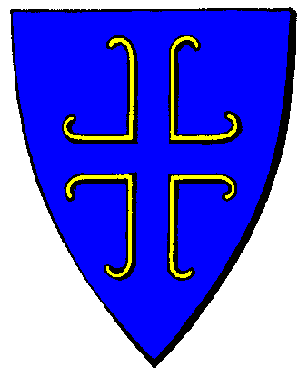

|

|
Das schwarze Brett
|
|
| Übersicht,
Anschläge und Stammtisch (RPG) |
|
Gaia ruft mich??? (3  ) )
|
Rejäl
 |
Nun, ich würde gerne ein Kartenteil von meiner Heimatinsel Cap Puccino erlangen, um bei der Suche zu helfen.
Seit ich dort die Bibliothek betreten habe, mache ich mir Gedanken darüber, wie ich wohl eine Zugangsberechtigung erhalten könnte.
So habe ich nun Kakao aus meinem Lager genommen, bin zur Lagerinsel gesegelt und plaudere mit Trinchen.
Leider weiss ich nicht so recht, was ich sagen soll. Liegt es daran, daß ich in den letzten Nächten keine besonderen Träume hatte, oder schneide ich einfach nicht die richtigen Themen an, um einen Bibliotheksausweis zu erhalten?
Rejäl
Zur 11. Stunde am 29.Blumenmond im Jahre 422 |
26.10.05 21:14
|
|
| Deuteronimus der Zweite (RIP) |
So wird es wohl nun an mir sein, diese Liste weiter zu vervollständigen, auf ganze 20 Namen.
Yverddon
Fips Hummelwolle
Glorfindel von Gondolin
Leisetreter
Hrogar Blutsäufer
Ingham Incoloy
Ardán Fálmanôr von Nerôná
Mort StoHelit
Bratislav Gonzales
Mellefont Banain
Tilokh Araxes
Goldenes
Zokan Noteel
Noemi Duval
Guevera
Fabius Alagos
Rian Almaren
Tinkerbell de Esperanza
Daerwain Saelhûgion´
Deuteronimus der Zweite
Ich fand es schon sehr enttäuschend. Das Gespräch mit Trinchen war sehr interessant und steigerte meine Neugier auf die Bibliothekshallen, auf die Unmengen von Büchern, die dort lagern mussten. Um so grösser ward meine Freude, als ich von ihr einen Ausweis bekam, der mich zum Betreten berechtigte. Voller Enthusiasmus reiste ich zurück nach Cap Puccino um mich in den Hallen der dortigen Bibliothek umzusehen. Doch ach, ward meine Enttäuschung gross, ich bekam keinen Zugang zu den Hallen mit den Büchern, statt dessen lies man mich nur in Karten sehen. Die meisten waren überaltert und schon gar nicht mehr zu entziffern, so nahm ich die a mbesten erhalten mit. Nur wenige Buchstaben konnte ich entziffern, doch dem Sinne nach, sollte dieser Teil von Aro di nuss stammen.
Sir Deuteronimus der Zweite
Zur 15. Stunde am 29.Blumenmond im Jahre 422 |
26.10.05 22:09
|
|
| Sâlía Séregon (RIP) |
*schreibt mühsam alle Namen Ab und kritzelt ihren dann darunter. Diese Elfe hat wahrlich das, was man eine Sauklaue nennt*
Yverddon
Fips Hummelwolle
Glorfindel von Gondolin
Leisetreter
Hrogar Blutsäufer
Ingham Incoloy
Ardán Fálmanôr von Nerôná
Mort StoHelit
Bratislav Gonzales
Mellefont Banain
Tilokh Araxes
Goldenes
Zokan Noteel
Noemi Duval
Guevera
Fabius Alagos
Rian Almaren
Tinkerbell de Esperanza
Daerwain Saelhûgion´
Deuteronimus der Zweite
Sâlía A´nandaval
so file namen sind das.
ich habe jezt auch endlich mein kartenstück. Riker war so lib und hat mir den kakao gegeben und auf Cap Puccino habe ich es dan auch bekomen. aber es ist komisch wie gemein wichtel doch sein könen.
liebe grüse
Sâlía A´nandaval
Zur 20. Stunde am 31.Blumenmond im Jahre 422 |
27.10.05 10:42
|
|
| Anastasius (RIP) |
Rejäl
es wird daran liegen das ihr , ebenso wie ich, noch keinen Traum erlangtet der Euch den richtigen Weg wies.
Auch ich bin schon seid anbeginn der suche dabei gewesen und stehe hier immer noch verwirrt herrum bzw habe es inzwischen aufgegeben selbst danach zu suchen, sollten aber die besitzer der schnipsel hilfe benoetigen so stehe ich gerne jederzeit bereit.
Urvan zum Grusse
Sir Anastasius,
Vorsteher von Borbra,
Hohepriester im Dienste des einzig wahren Glaubens an Urvan,
Legionär Urvans,
Innenminister der Ritter Esturiens
Zur 13. Stunde am 32.Blumenmond im Jahre 422 |
27.10.05 14:36
|
|
Rejäl
|
Habt dank, Sir Anastasius.
Dann werde ich mich wohl heute abend mit leeren Händen zurück auf den Weg nach Cap Puccino machen und nehme dabei natürlich bei Bedarf gerne einen Besitzer von Bibliotheksausweisen mit zur dortigen Wichtelbibliothek.
herzliche grüssse,
Rejäl
Rejäl
Zur 15. Stunde am 32.Blumenmond im Jahre 422 |
27.10.05 14:59
|
|
| Njaminjami Stoppelhoppser (RIP) |
Nun, ich habe keinen Finger gekrümmt und habe eine Abzweigung bekommen. Nun will der lächerliche grüne Zwerg so einen Papierschnipsel von mir, ich habe aber keinen.
Lady Iriana Silberklinge
Zur 14. Stunde am 33.Blumenmond im Jahre 422 |
27.10.05 20:28
|
|
| Helena Turambar (RIP) |
WARD ZU WO SIE DORT EHREN SIE SELBST VERTRIEBEN
auch ich hatte diesen traum,nur war iuch weit weg von hier und konnte euch nicht erreichen.Ich weiß leider nichts und hoffe auf eine Nachricht die mich aufklärt was zu tun ist wenn man diesen Traum hatte.
Steppenwölfin,
Kardinälin im Dienste des einzig wahren Glaubens an Pheron,
Verlobte des ehrenwerten Igor Seewolf
Zur 5. Stunde am 41.Blumenmond im Jahre 422 |
29.10.05 15:01
|
|
Übersicht,
Anschläge und Stammtisch (RPG)
|
|
|
|